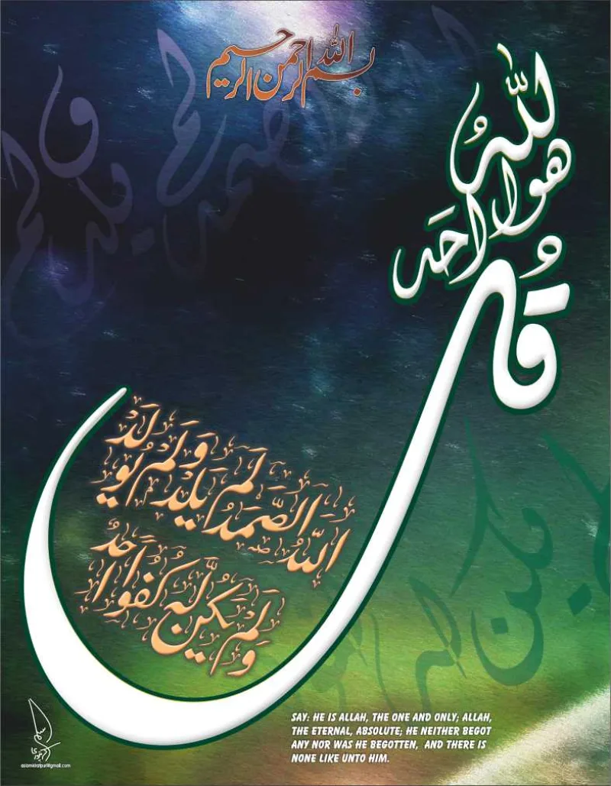

Surah 112 denies a sonship Christians never taught
ContestedMuslim scholars have a real answer here. Say so before your friend does.
What the verses say
Surah 112:3 says God "neither begets nor is born." Quran 6:101 asks how He can have a son when He has no consort. Quran 2:116 and Quran 19:88-92 press the same denial.
What Christians actually teach
Christians agree God has no wife and no physical offspring. The Nicene Creed of 325 AD, three centuries before the Quran, calls the Son "begotten, not made." That means eternal generation within the one divine being.
It is explicitly not physical.
The Muslim answer, at full strength
Most sonship denials use the word walad, which means biological offspring. The audience of Quran 6:100 is pagan Meccans who gave Allah daughters (Quran 53:19-21).
Al-Tabari reads 6:101 as an argument against pagan family trees for God. Muslims also argue that eternal generation is empty language.
Begotten means either origin, and so a creature, or it means nothing.
Where it still bites
Surah 112 and Quran 2:116 have always been read against Christians too. Yet the Quran's only stated argument against divine sonship is the missing consort, plus the claim that it is unbefitting.
Eternal generation, the Christian position for 300 years, is never engaged.
How strong is this argument?
Genuinely arguable. The criticism is not that the Quran says something false.
It is that it argues against the crudest version and stops there. Say it carefully.
A Muslim can reply that the denial was meant to cover everything.
What to say
"We agree God has no wife. Has anyone ever explained what Christians mean by Son?"


How they answer this — at its strongest
They say the target is pagans who gave Allah daughters, not the church.
The strongest reply has three parts. First, most of the Quran's sonship denials use walad, which means biological offspring. That is exactly the carnal notion. The target is pagan Arabs who gave Allah daughters. The setting of 6:100 is Meccan polytheists. It also covers any Christian who slid toward a literal reading.
Second, al-Tabari reads 6:101 as an argument against pagan family trees for God. Third, on Muslim analysis, eternal generation is itself an empty dodge. Begotten either means dependence and origin, and so a creature, or it is honorific language with no content. Either way tawhid, God's absolute oneness, stands. And the denial in 19:92 covers every version of sonship.
The verdict
Both sides have a case: the Quran answers the crudest version and stops.
The pagan-context defence for 6:101 is textually respectable. Christians do deny carnal begetting. So the verses may pass each other rather than collide.
But Surah 112 and 2:116 have always been read against Christians too. And the Quran's only stated argument against divine sonship is the missing consort. It adds only that sonship is unbefitting. It never engages eternal generation, the Christian position for 300 years. The criticism is not that the Quran affirms something false. It is that it argues against the doctrine's crudest counterfeit and declares victory.
This stays contested. A Muslim can claim the denial was meant to cover everything. But that reading makes the consort argument beside the point. It would then answer no Christian who actually existed.
Sources
- Gabriel Said Reynolds, The Quran and the Bible (on 6:101 and pagan 'daughters of Allah')
- Answering Islam — 'The Son of God in the Bible and the Qur'an'
- FaithBrowser — 'Can God Have A Son?' (walad/ibn distinction)